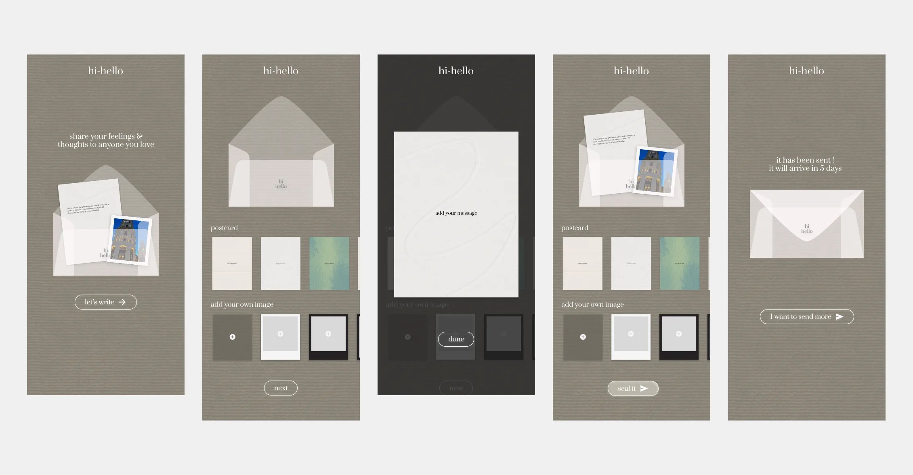
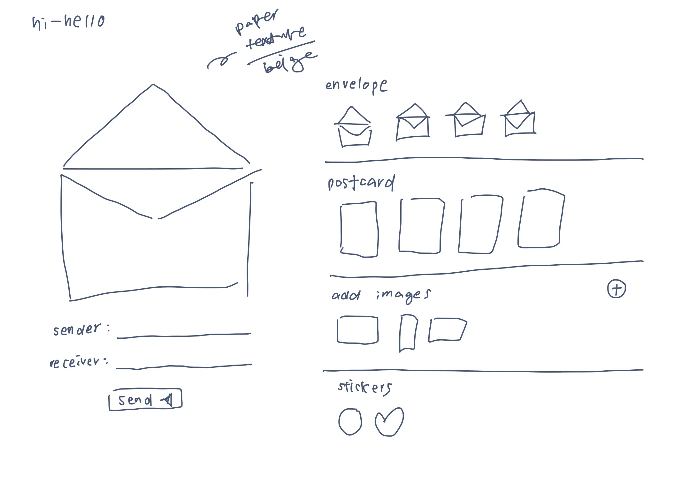
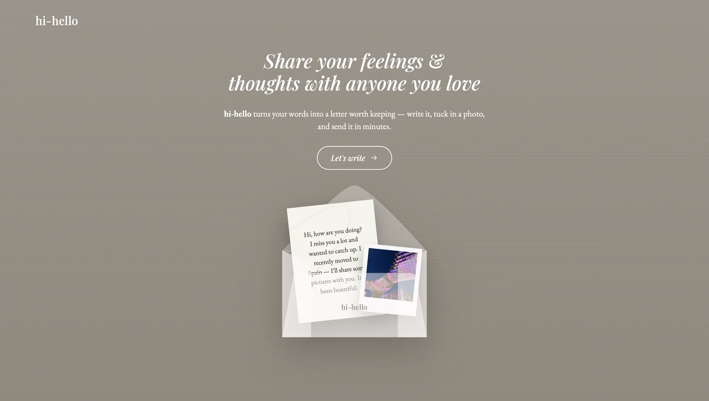
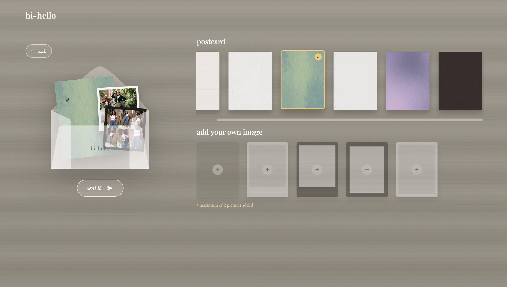
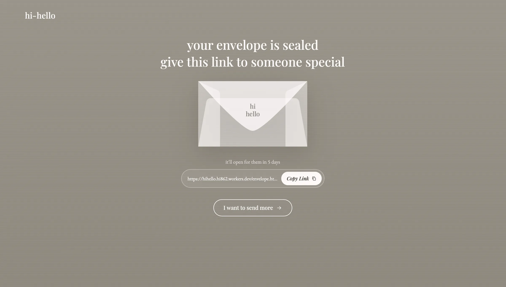
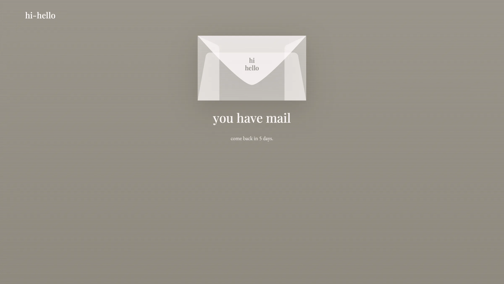
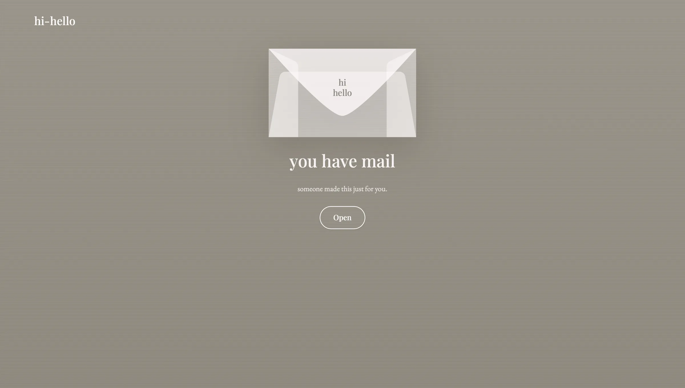
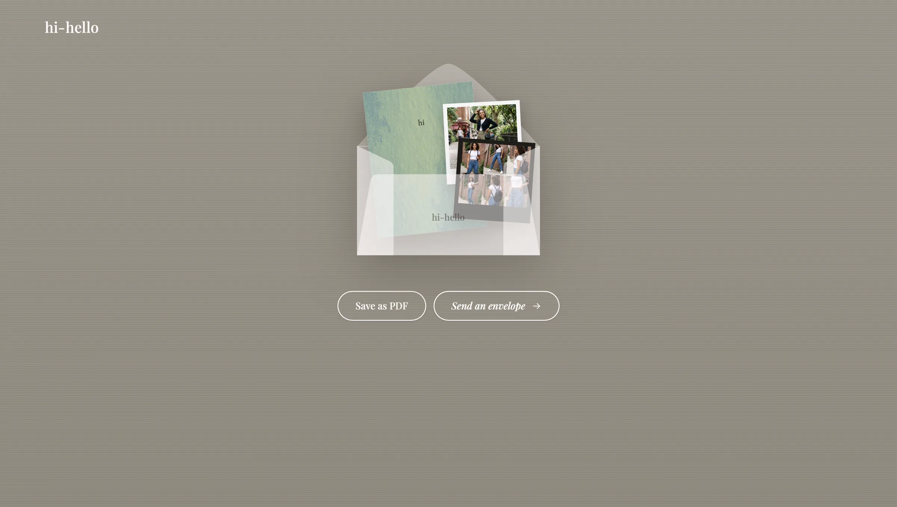

HiHello
A digital letter-writing app. You pick a postcard, write a note, add up to two photos, then seal it. Your friend can't open it for five days. I designed, coded and deployed it solo to explore how small rituals, not more features, can make a digital moment feel intentional.
- Role
- Solo: product design and development
- Timeline
- 5 weeks
- Tools
- Figma, Claude Code, Cloudflare
- Status
- Live, used by 4 people so far

Problem
Messages are instant to send, and just as quick to forget.
How might we bring the intention and anticipation of physical letters into digital messaging, without bringing back the hassle of physical mail?
Instant messaging removed every step between thinking of someone and reaching them. That's mostly good, but it also erased the anticipation a letter still has. HiHello keeps the convenience of digital and puts a few of those steps back.
- Think
- Type
- Send
- Read
- Think
- Write
- Personalize
- Seal
- Send
- Wait
- Open
- Choose
- Write
- Personalize
- Seal
- Send
- Wait
- Open
The goal wasn't to make messaging slower for its own sake. It was to make the waiting part of the experience.
Exploration
I listed what makes a letter fun, then cut the parts that are just a chore.
Before opening Figma, I wrote down every part of sending a physical letter. Waiting for it to arrive, choosing a pretty card, thinking of the person while writing, adding photos: worth keeping. Going to the post office: cut. Then I sketched by hand to try a few ritual mechanics quickly.

Principles
Four rules decided which rituals earned their friction.
- Sending is intentionalIt should feel like something you made, not another disposable message.
- Digital feels tangibleEnvelopes, postcards and photos borrow familiar physical cues.
- Personal, not decoratedChoosing a card and adding photos make the letter feel like yours.
- Waiting is the productHiHello adds a delay on purpose instead of engineering it away.
The experience
Choose, write, seal, wait, open. Each step borrows from a real letter.
Start with one person
The landing page has one message and one action. Before writing anything, you're already asked to think of someone.

Picking a card is picking a mood
I designed all six postcard styles and the photo frames in Figma. Choosing one stands in for choosing stationery before you write. It's a short, fixed list on purpose: picking from six is quick, while designing your own card would slow people down before they've written a word.
Two photos, on purpose
A physical letter can't hold twenty pictures either.

"Seal it," not "send it"
The final action is sealing the letter. The word brings back the finality of dropping something in a mailbox: once it's sealed, it can't be edited. You then share a link with the person.

Visible, but out of reach
The recipient sees that an envelope is waiting, but can't open it. Showing that it exists, but not what's inside, is what turns the delay into anticipation instead of a hidden message.


Opening it yourself
When the wait ends, the recipient opens the envelope themselves instead of just receiving a message, and can save the letter as a PDF.

Early feedback
Friends said they put more thought into what they wrote, which is the behaviour I designed for.
Three friends used HiHello to write real letters. Two described exactly what the rituals were meant to do: make sending feel deliberate.
This is so fun to play with. I sent my friends genuine messages that I thought about before writing.
Friend, first-time userI've never written letters to my friends before, but as I was writing I really put my thought into it.
Friend, first-time userI hope there's an actual domain for this, and I wish I could upload my own postcard designs.
Friend, first-time user
- Custom domainNot yet. It runs on a free Cloudflare address while it's an experiment, so I'm not paying for a domain before it's proven.
- Upload your own postcardA possible next feature. For now the fixed set keeps choosing fast, but people who want to personalize further may value it.
Open questions
The five-day wait is a hypothesis, not a finding.
To be upfront: I didn't do research to validate five days specifically. It's an intentional product experiment. The feedback above is encouraging about the writing, but none of it is about the wait itself, and four people (my friends and me) is too few to answer any of these:
- Does the wait create anticipation, or just frustration?
- Is five days too long? Would 24 hours feel more natural?
- Does the recipient understand why they have to wait?
- Does anticipation actually make the letter feel more meaningful once it's opened?
What I'd test next
A simple A/B comparison of delay lengths (24 hours, 5 days, 14 days) with real senders and recipients, to see whether the wait makes a letter land differently or just annoys people.
Build
Designed, coded and deployed solo, end to end.
I designed HiHello in Figma and built it as a responsive web app for mobile and desktop, with a small backend API, deployed on a free Cloudflare Workers address. I used Claude Code to move faster through front-end implementation, while making every interaction and layout decision myself.
- Figma
- HTML, CSS, JS
- Backend API
- Cloudflare
- Live
Reflection
Designing friction on purpose, when most of my work removes it.
The five-day wait is a bet, and if I had more time, I would test it with a larger group of users.